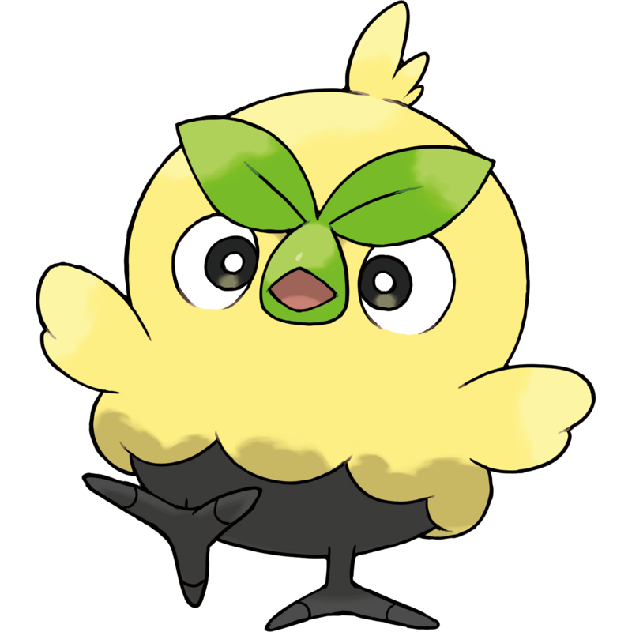
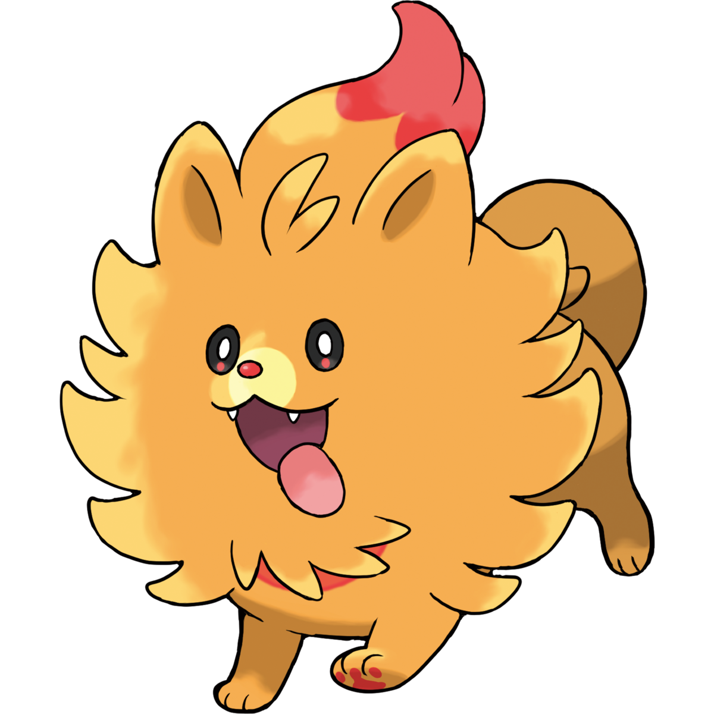
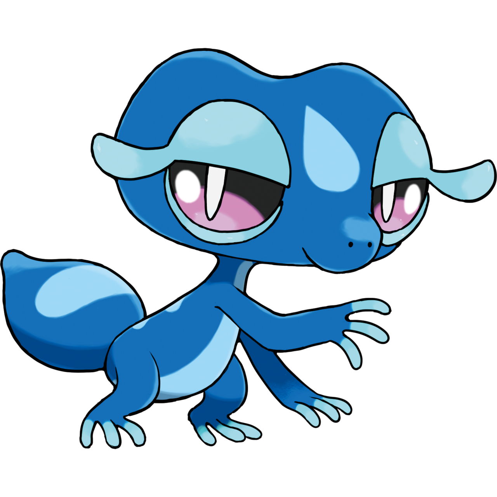

These 3 Pokemon were introduced for 2027's Pokemon Winds and Pokemon Waves, and are not currently listed in the PokeAPI

Type: Grass
Browt uses its eyebrow leaves to photosynthesize. It is energetic and lively, but also rather clumsy.

Type: Fire
Inside Pombon's lungs is an organ that generates heat, which causes the red area on its chest to glow slightly.

Type: Water
Gecqua has a short, bulbous tail that it uses to launch jets of water. It has an intelligent, haughty personality.